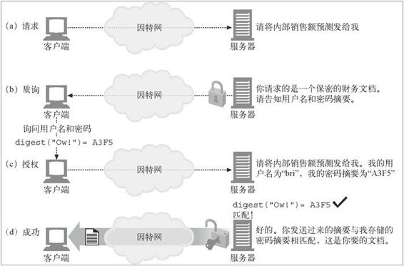
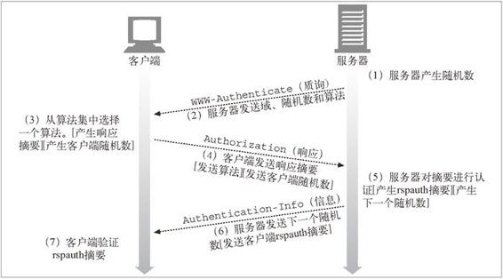
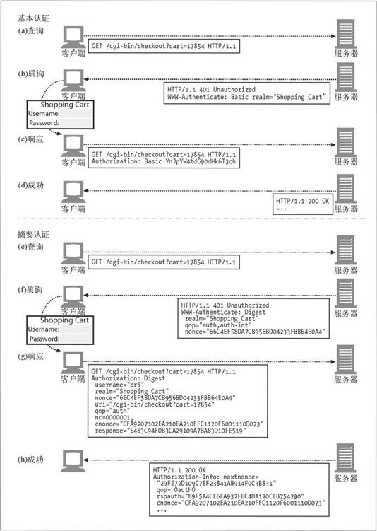

13.1 摘要认证的改进
摘要认证是另一种 HTTP 认证协议，它试图修复基本认证协议的严重缺陷。具体来说，摘要认证进行了如下改进。
永远不会以明文方式在网络上发送密码。
可以防止恶意用户捕获并重放认证的握手过程。
可以有选择地防止对报文内容的篡改。
防范其他几种常见的攻击方式。
摘要认证并不是最安全的协议。1 摘要认证并不能满足安全 HTTP 事务的很多需求。对这些需求来说，使用传输层安全（Transport Layer Security，TLS）和安全 HTTP （Secure HTTP，HTTPS）协议更为合适一些。
1 比如，与基于公有密钥的机制相比，摘要认证所提供的认证机制就不够强。同样，摘要认证除了能保护密码外，并没有提供保护其他内容的方式——请求和应答中的其余部分仍然可能被窃听。
但摘要认证比它要取代的基本认证强大很多。与很多建议其他因特网服务使用的常用策略相比，（比如曾建议 LDAP、POP 和 IMAP 使用的 CRAM-MD5），摘要认证也要强大很多。
迄今为止，摘要认证还没有被广泛应用。但由于基本认证存在固有的安全风险，HTTP 设计者曾在 RFC 2617 中建议：“在可行的情况下应该将目前在用的所有使用基本认证的服务，尽快地转换为摘要认证方式。”2 这个标准的前景还不太明朗。
2 随着 SSL 加密 HTTP 的流行和广泛采用，有关摘要认证的现实意义曾有过很激烈的争论。时间将会告诉我们摘要认证能否达到所需的规模。
13.1.1 用摘要保护密码
摘要认证遵循的箴言是“绝不通过网络发送密码”。客户端不会发送密码，而是会发送一个“指纹”或密码的“摘要”，这是密码的不可逆扰码。客户端和服务器都知道这个密码，因此服务器可以验证所提供的摘要是否与密码相匹配。只拿到摘要的话，除了将所有的密码都拿来试试之外，没有其他方法可以找出摘要是来自哪个密码的！ 3
3 有一些技术，比如词典攻击，会首先尝试一些常见的密码。这些密码分析技术可以极大地简化密码破译进程。
下面来看看摘要认证的工作原理（这是一个简化版本）。
在图 13-1a 中，客户端请求了某个受保护文档。
在图 13-1b 中，在客户端能够证明其知道密码从而确认其身份之前，服务器拒绝提供文档。服务器向客户端发起质询，询问用户名和摘要形式的密码。
在图 13-1c 中，客户端传递了密码的摘要，证明它是知道密码的。服务器知道所有用户的密码，4 因此可以将客户提供的摘要与服务器自己计算得到的摘要进行比较，以验证用户是否知道密码。另一方在不知道密码的情况下，很难伪造出正确的摘要。
4 实际上，服务器只需要知道密码的摘要即可。
在图 13-1d 中，服务器将客户端提供的摘要与服务器内部计算出的摘要进行对比。如果匹配，就说明客户端知道密码（或者很幸运地猜中了！）。可以设置摘要函数，使其产生很多数字，让人不可能幸运地猜中摘要。服务器进行了匹配验证之后，会将文档提供给客户端——整个过程都没有在网络上发送密码。

图 13-1 用摘要来实现隐藏密码的认证
我们将在表 13-8 中更详细地讨论摘要认证中那些特殊的首部。
13.1.2 单向摘要
摘要是“对信息主体的浓缩”。5 摘要是一种单向函数，主要用于将无限的输入值转换为有限的浓缩输出值。6 常见的摘要函数 MD5，7 会将任意长度的字节序列转换为一个 128 位的摘要。
5 韦氏词典，1998 年。
6 理论上来讲，我们将数量无限的输入值转换成了数量有限的输出值，所以两个不同的输入值就可能映射为同一个摘要。这种情况被称为冲突（collision）。实际上，由于可用输出值的数量足够大，所以在现实生活中，出现冲突的可能是微乎其微的，对我们要实现的密码匹配来说并不重要。
7 MD5 表示“报文摘要的第五版”，是摘要算法系列中的一种。安全散列算法（Secure Hash Algorithm， SHA）是另一种常见的摘要函数。
128 位 = 2128，或者大约
1 000 000 000 000 000 000 000 000 000 000 000 000 000 种不同的输出值。
对这些摘要来说，最重要的是如果不知道密码的话，要想正确地猜出发送给服务器的摘要将是非常困难的。同样，如果有摘要，想要判断出它是由无数输入值中的哪一个产生的，也是非常困难的。
MD5 输出的 128 位的摘要通常会被写成 32 个十六进制的字符，每个字符表示 4 位。表 13-1 给出了几个示例输入的 MD5 摘要。注意 MD5 是怎样根据任意的输入产生定长的摘要输出的。
表13-1 MD5摘要实例
| 输 入 | MD5摘要 |
|---|---|
| "Hi" | C1A5298F939E87E8F962A5EDFC206918 |
| "bri:Ow!" | BEAAA0E34EBDB072F8627C038AB211F8 |
| "3.1415926535897" | 475B977E19ECEE70835BC6DF46F4F6DE |
| "http://www.http-guide.com/index.htm" | C617C0C7D1D05F66F595E22A4B0EAAA5 |
| "WE hold these Truths to be self-evident, that all Men are created equal, that they are endowed by their Creator with certain unalienable Rights, that among these are Life, Liberty and the Pursuit of Happiness—That to secure these Rights, Governments are instituted among Men, deriving their just Powers from the Consent of the Governed, that whenever any Form of Government becomes destructive of these Ends, it is the Right of the People to alter or to abolish it, and to institute new Government, laying its Foundation on such Principles, and organizing its Powers in such Form, as to them shall seem most likely to effect their Safety and Happiness." | 66C4EF58DA7CB956BD04233FBB64E0A4 |
有时也将摘要函数称为加密的校验和、单向散列函数或指纹函数。
13.1.3 用随机数防止重放攻击
使用单向摘要就无需以明文形式发送密码了。可以只发送密码的摘要，而且可以确信，没有哪个恶意用户能轻易地从摘要中解码出原始密码。
但是，仅仅隐藏密码并不能避免危险，因为即便不知道密码，别有用心的人也可以截获摘要，并一遍遍地重放给服务器。摘要和密码一样好用。
为防止此类重放攻击的发生，服务器可以向客户端发送一个称为随机数（nonce）8 的特殊令牌，这个数会经常发生变化（可能是每毫秒，或者是每次认证都变化）。客户端在计算摘要之前要先将这个随机数令牌附加到密码上去。
8 随机数这个词表示“本次”或“临时的”。在计算机安全的概念中，随机数捕获了一个特定的时间点，将其加入到安全计算之中。
在密码中加入随机数就会使摘要随着随机数的每一次变化而变化。记录下的密码摘要只对特定的随机值有效，而没有密码的话，攻击者就无法计算出正确的摘要，这样就可以防止重放攻击的发生。
摘要认证要求使用随机数，因为这个小小的重放弱点会使未随机化的摘要认证变得和基本认证一样脆弱。随机数是在 WWW-Authenticate 质询中从服务器传送给客户 端的。
13.1.4 摘要认证的握手机制
HTTP 摘要认证协议是一种升级版的认证方式，所用首部与基本认证类似。它在传统首部中添加了一些新的选项，还添加了一个新的可选首部 Authorization-Info。
图 13-2 描述了简化的摘要认证三步握手机制。

图 13-2 摘要认证的握手机制
图 13-2 中发生的情况如下所述。
在第（1）步中，服务器会计算出一个随机数。在第（2）步中，服务器将这个随机数放在 WWW-Authenticate 质询报文中，与服务器所支持的算法列表一同发往客户端。
在第（3）步中，客户端选择一个算法，计算出密码和其他数据的摘要。在第（4）步中，将摘要放在一条 Authorization 报文中发回服务器。如果客户端要对服务器进行认证，可以发送客户端随机数。
在第（5）步中，服务器接收摘要、选中的算法以及支撑数据，计算出与客户端相同的摘要。然后服务器将本地生成的摘要与网络传送过来的摘要进行比较，验证其是否匹配。如果客户端反过来用客户端随机数对服务器进行质询，就会创建客户端摘要。服务器可以预先将下一个随机数计算出来，提前将其传递给客户端，这样下一次客户端就可以预先发送正确的摘要了。
这些信息中很多是可选的，而且有默认值。为了说明问题，图 13-3 对比了基本认证中发送的报文（参见图 13-3a 至图 13-3d）与简单的摘要认证实例发送的报文（参见图 13-3e 至图 13-3h）。

图 13-3 基本认证与摘要认证的语法对比
现在我们来更详细地探讨摘要认证的内部工作原理。